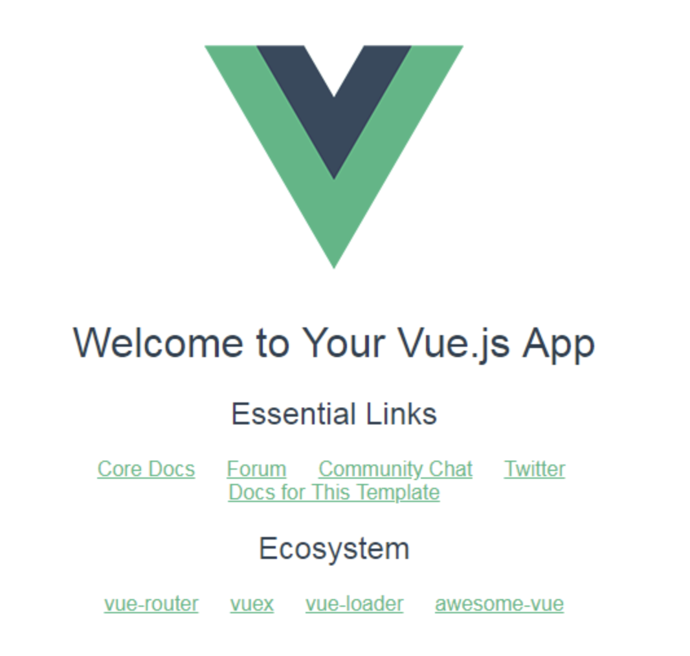
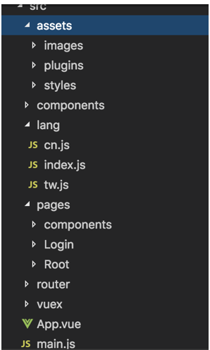
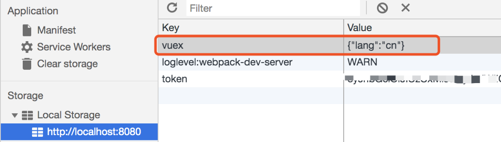
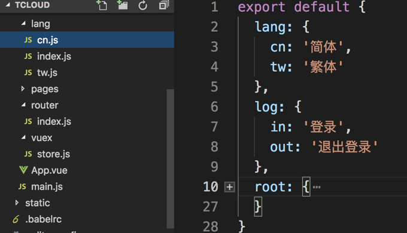
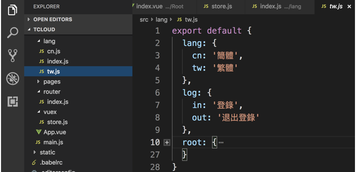
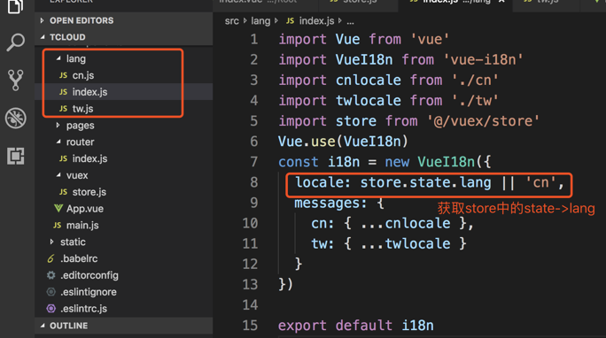
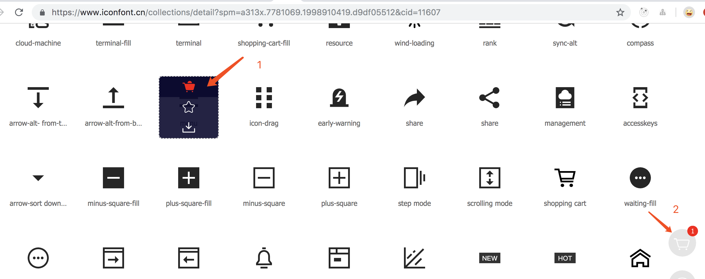
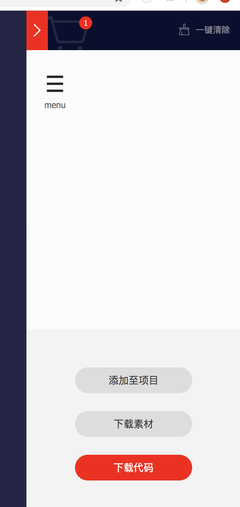
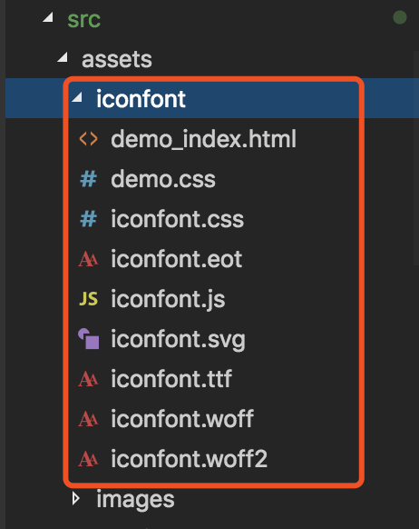

$ npm install -g vue-cli注意：在mac执行该命令会报错
改用管理员权限执行以下命令即可
$ sudo npm install -g vue-cli
$ vue init webpack tcloud
$ cd tcloud
$ npm run dev完成了利用脚手架创建并启动一个vue的项目，可访问http://localhost:8080 看到下图界面说明项目启动成功。

1.首先对目录结构调整后如下：

2.安装vuex
$ npm install vuex --save3.创建store文件
import Vue from 'vue'
import Vuex from 'vuex'
Vue.use(Vuex)
const state = {
test: 1,
lang: 'cn'
}
const mutations = {
add: (state, data) => {
state.selectGoods.push(data)
state.test++
}
}
const actions = {
addTest: ({ commit }, data) => {
commit('add', data)
}
}
export default new Vuex.Store({
state,
mutations,
actions
})4.在入口文件main.js中引入store
import store from './store/store'
// 并挂载到根实例中new Vue({
el: '#app',
store,
router,
components: { App },
template: '<App/>'
})5.vuex-persistedstate实现数据持久化
vuex可以进行全局的状态管理，但刷新后刷新后数据会消失
$ npm install vuex-persistedstate --saveimport createPersistedState from "vuex-persistedstate"
const store = new Vuex.Store({
// ...
plugins: [createPersistedState({
storage: window.sessionStorage, // 不设置默认存储到localStorage
reducer(val) {
return {
// 指定需要持久化的state
lang: val.lang
}
}
})]
1.安装vue-i18n
$ npm install vue-i18n --save
2.准备业务相关文本的翻译文件

3.创建VueI18n 实例

代码如下
import Vue from 'vue'
import VueI18n from 'vue-i18n'
import cnlocale from './cn'
import twlocale from './tw'
import store from '@/vuex/store'
Vue.use(VueI18n)
const i18n = new VueI18n({
locale: store.state.lang || 'cn',
messages: {
cn: { ...cnlocale },
tw: { ...twlocale }
}
})
export default i18n
4.在main.js中引入vue-i18n
import i18n from './lang/index'
// 把 i18n 挂载到 vue 根实例上
new Vue({
el: '#app',
i18n,
axios,
store,
router,
components: { App },
template: '<App/>'
})5.引用
// 在HTML模板中引用
<van-button @click="logout" type="default">{{$t('log.out')}}</van-button>
// 在 js 模板中使用
this.$t('log.in')6.解决切换语言后刷新界面时出现一瞬间白屏的问题
利用在app.vue的<router-view></router-view>加上v-if属性和provide/inject，具体代码实现如下：
// App.vue文件
<template>
<div id="app">
<router-view v-if="isAlive" />
</div>
</template>
<script>
export default {
name: 'App',
provide () {
return {
reload: this.reload
}
},
data () {
return {
isAlive: true
}
},
methods: {
reload () {
this.isAlive = false
this.$nextTick(function () {
this.isAlive = true
})
}
}
}
</script>接下来在需要刷新的组件中注入reload函数
<template>
<button @click="refresh"></button>
</template>
<script>
export default{
name: 'refresh',
inject: ['reload'],
methods: {
refresh () {
this.reload()
}
}
}
</script>1.路由拦截
首先在定义路由的时候就需要多添加一个自定义字段requireAuth，用于判断该路由的访问是否需要登录。如果用户已经登录（token存在），则顺利进入路由， 否则就进入登录页面。
const routes = [
{
path: '/',
name: '/',
component: Index
},
{
path: '/repository',
name: 'repository',
meta: {
requireAuth: true, // 添加该字段，表示进入这个路由是需要登录的
},
component: Repository
},
{
path: '/login',
name: 'login',
component: Login
}
];定义完路由后，我们主要是利用vue-router提供的钩子函数beforeEach()对路由进行判断
router.beforeEach((to, from, next) => {
if (to.meta.requireAuth) { // 判断该路由是否需要登录权限
if (store.state.token) { // 通过vuex state获取当前的token是否存在
next();
}
else {
next({
path: '/login',
query: {redirect: to.fullPath} // 将跳转的路由path作为参数，登录成功后跳转到该路由
})
}
}
else {
next();
}
})每个钩子方法接收三个参数：
2.axios拦截器
当前token失效了，但是token依然保存在本地，这时候你去访问需要登录权限的路由时，实际上应该让用户重新登录。 这时候就需要结合 http 拦截器 + 后端接口返回的http 状态码来判断
// http request 拦截器
axios.interceptors.request.use(
config => {
if (store.state.token) { // 判断是否存在token，如果存在的话，则每个http header都加上token
config.headers.Authorization = `token ${store.state.token}`;
}
return config;
},
err => {
return Promise.reject(err);
});
// http response 拦截器
axios.interceptors.response.use(
response => {
return response;
},
error => {
if (error.response) {
switch (error.response.status) {
case 401:
// 返回 401 清除token信息并跳转到登录页面
store.commit(types.LOGOUT); path: 'login',
query: {redirect: router.currentRoute.fullPath}
})
}
}
return Promise.reject(error.response.data) // 返回接口返回的错误信息
});1.打开阿里矢量图标库网站将需要的icon下载到本地
将需要的icon全部加入购物车，最后打开购物车选择「下载代码」将相关文件下载到本地

2.在项目中引入iconfont文件
在上文目录结构基础上 选择在src>assets路径下新增iconfont目录，并将下载zip文件解压后全部文件拷贝到该目录下，如下图：

接下来就是在mian.js文件中引入iconfont.css样式文件
import '@/assets/iconfont/iconfont.css'
3.引入icon （使用）
在介绍阿里图标使用之前，先了解一下vant框架中icon使用方式：
// mian.js
import Vant from 'vant'
Vue.use(Vant)
//组件内 vue文件
<van-icon name="location-o" />接下来是iconfont图标的使用方式：
// 新增属性class="iconfont" class-prefix='icon' 固定且不可省略 注意：其中name仅可引用所下载的图标名称 不可任意选择阿里图标库中其它图标（下载之前未加入购物车的图标）
<van-icon class="iconfont" class-prefix='icon' name='menu' />